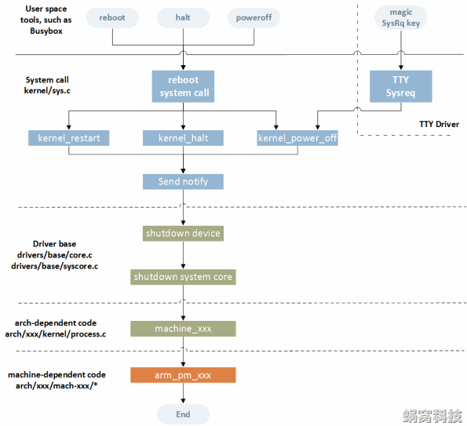

高通平台关机流程
梳理一下Android平台关机流程
在使用计算机的过程中，关机和重启是最先学会的两个操作。同样，这两个操作在Linux中也存在，称作shutdown和restart。这就是本文要描述的对象。
参考
上层流程
QSSI.12/system/core/reboot/reboot.c查看reboot命令的实现:
#include <errno.h>
#include <stdio.h>
#include <stdlib.h>
#include <cutils/properties.h>
#include <cutils/android_reboot.h>
#include <unistd.h>
int main(int argc, char *argv[])
{
int ret;
size_t prop_len;
char property_val[PROPERTY_VALUE_MAX];
const char *cmd = "reboot";
char *optarg = "";
opterr = 0;
do {
int c;
c = getopt(argc, argv, "p");
if (c == -1) {
break;
}
switch (c) {
case 'p':
cmd = "shutdown";
break;
case '?':
fprintf(stderr, "usage: %s [-p] [rebootcommand]\n", argv[0]);
exit(EXIT_FAILURE);
}
} while (1);
if(argc > optind + 1) {
fprintf(stderr, "%s: too many arguments\n", argv[0]);
exit(EXIT_FAILURE);
}
if (argc > optind)
optarg = argv[optind];
prop_len = snprintf(property_val, sizeof(property_val), "%s,%s", cmd, optarg);
if (prop_len >= sizeof(property_val)) {
fprintf(stderr, "reboot command too long: %s\n", optarg);
exit(EXIT_FAILURE);
}
ret = property_set(ANDROID_RB_PROPERTY, property_val);
if(ret < 0) {
perror("reboot");
exit(EXIT_FAILURE);
}
// Don't return early. Give the reboot command time to take effect
// to avoid messing up scripts which do "adb shell reboot && adb wait-for-device"
while(1) { pause(); }
fprintf(stderr, "Done\n");
return 0;
}
其中prop_len = snprintf(property_val, sizeof(property_val), "%s,%s", cmd, optarg);
cmd为shutdown（在加了-p选项时的情况）或者reboot
if (prop_len >= sizeof(property_val)) {
fprintf(stderr, "reboot command too long: %s\n", optarg);
exit(EXIT_FAILURE);
}
ret = property_set(ANDROID_RB_PROPERTY, property_val);
if(ret < 0) {
perror("reboot");
exit(EXIT_FAILURE);
}
解析完参数后，会设置一个属性值ANDROID_RB_PROPERTY，定义如下：
QSSI.12/system/core/libcutils/include/cutils/android_reboot.h
30:#define ANDROID_RB_PROPERTY "sys.powerctl"
init/init.cpp到init.cpp 的 PropertyChanged ，分别对 ctl 和 sys.powerctl 做特殊处理, 如果是sys.powerctl关机，则会调用 init.cpp 的 trigger_shutdown 函数:
void PropertyChanged(const std::string& name, const std::string& value) {
// If the property is sys.powerctl, we bypass the event queue and immediately handle it.
// This is to ensure that init will always and immediately shutdown/reboot, regardless of
// if there are other pending events to process or if init is waiting on an exec service or
// waiting on a property.
// In non-thermal-shutdown case, 'shutdown' trigger will be fired to let device specific
// commands to be executed.
if (name == "sys.powerctl") {
trigger_shutdown(value);
}
if (property_triggers_enabled) {
ActionManager::GetInstance().QueuePropertyChange(name, value);
WakeMainInitThread();
}
prop_waiter_state.CheckAndResetWait(name, value);
}
shutdown的处理
对 shutdown的处理是在nit.cpp的 SecondStageMain函数中，也就是在 init的进程中处理的。如果有shutdown cmd到来，则通过 epoll 机制唤醒 init 进程， 代码如下：
static void WakeMainInitThread() {
uint64_t counter = 1;
TEMP_FAILURE_RETRY(write(wake_main_thread_fd, &counter, sizeof(counter)));
}
reboot.cpp的HandlePowerctlMessage调用 reboot.cpp的 DoReboot ，DoReboot 函数非常重要：
init/reboot.cpp:
void HandlePowerctlMessage(const std::string& command) {
unsigned int cmd = 0;
std::vector<std::string> cmd_params = Split(command, ",");
std::string reboot_target = "";
bool run_fsck = false;
bool command_invalid = false;
bool userspace_reboot = false;
if (cmd_params[0] == "shutdown") {
cmd = ANDROID_RB_POWEROFF;
if (cmd_params.size() >= 2) {
if (cmd_params[1] == "userrequested") {
// The shutdown reason is PowerManager.SHUTDOWN_USER_REQUESTED.
// Run fsck once the file system is remounted in read-only mode.
run_fsck = true;
} else if (cmd_params[1] == "thermal") {
// Turn off sources of heat immediately.
TurnOffBacklight();
// run_fsck is false to avoid delay
cmd = ANDROID_RB_THERMOFF;
}
}
} else if (cmd_params[0] == "reboot") {
cmd = ANDROID_RB_RESTART2;
if (cmd_params.size() >= 2) {
reboot_target = cmd_params[1];
if (reboot_target == "userspace") {
LOG(INFO) << "Userspace reboot requested";
userspace_reboot = true;
}
}
}
auto shutdown_handler = [cmd, command, reboot_target, run_fsck](const BuiltinArguments&) {
DoReboot(cmd, command, reboot_target, run_fsck);
return Result<void>{};
};
ActionManager::GetInstance().QueueBuiltinAction(shutdown_handler, "shutdown_done");
}
最后在system/core/init/reboot_utils.cpp中使用 linux 系统调用reboot(RB_POWER_OFF) system/bin/reboot来关机。
内核流程
在Linux操作系统中，可以通过reboot、halt、poweroff等命令，发起reboot，具体的操作流程如下：

一般的Linux操作系统，在用户空间都提供了一些工具集合（如常在嵌入式系统使用的Busybox），这些工具集合包含了reboot、halt和poweroff三个和Reboot相关的命令。读者可以参考man帮助文档，了解这些命令的解释和使用说明
用户空间程序通过reboot系统调用，进入内核空间
内核空间根据执行路径的不同，提供了kernel_restart、kernel_halt和kernel_power_off三个处理函数，响应用空间的reboot请求
这三个处理函数的处理流程大致相同，主要包括：向关心reboot过程的进程发送Notify事件；调用drivers核心模块提供的接口，关闭所有的外部设备；调用drivers syscore模块提供的接口，关闭system core；调用Architecture相关的处理函数，进行后续的处理；最后，调用machine相关的接口，实现真正意义上的Reboot
另外，借助TTY模块提供的Sysreq机制，内核提供了其它途径的关机方法，如某些按键组合、向/proc文件写入命令等，后面会详细介绍
kernel关机
如果需要对关机进行监听，可以实现pm中的kernel_power_off处理函数：
static void sgm41528_charger_power_off(void)
{
int ret;
chr_err( "sgm41528_charger_power_off and to disable charge/otg..\n");
ret = _charger_adc_stop();
if (ret) {
chr_err( "disable sgm41528 adc failed\n");
}
ret = _set_otg_enable(false);
if (ret) {
chr_err( "disable sgm41528 charge failed\n");
}
}
static int sgm41528_charger_reboot_callback(struct notifier_block *nb,
unsigned long code,
void *unused)
{
int ret;
chr_err("%s:enter\n", __func__);
if (code == SYS_POWER_OFF) {
chr_err( "SYS_POWER_OFF and to disable charge/otg..\n");
ret = _charger_adc_stop();
if (ret) {
chr_err( "disable sgm41528 adc failed\n");
}
ret = _set_otg_enable(false);
if (ret) {
chr_err( "disable sgm41528 charge failed\n");
}
}
return NOTIFY_DONE;
}
static int sgm41528_charger_probe(struct i2c_client *client,
const struct i2c_device_id *id)
{
sgm41528_info->reboot_notify.notifier_call = sgm41528_charger_reboot_callback;
ret = register_reboot_notifier(&sgm41528_info->reboot_notify);
if (ret) {
dev_err(dev, "Failed register reboot notifier.\n");
goto probe_fail_0;
}
if (pm_power_off == NULL)
pm_power_off = sgm41528_charger_power_off;
}
打印如下：
[35251.343308] into pcd_shutdown...
[35251.343408] sgm41528_charger_power_off and to disable charge/otg..
[35251.474105] reboot: Power down
[35251.478236] Powering off the SoC